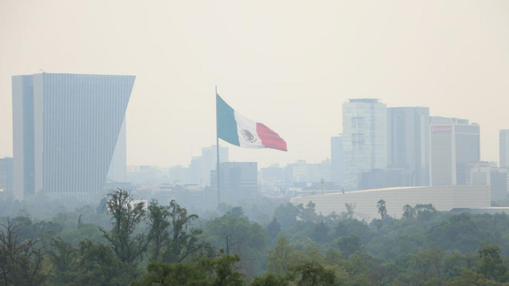

Desde el smog que se cierne sobre las ciudades hasta el humo dentro de las casas, la contaminación del aire representa una gran amenaza para la salud, el clima, la biodiversidad y los ecosistemas, advierte la Organización Mundial de la Salud (OMS). En el Día Internacional del Aire Limpio por un cielo azul, conoce qué es la contaminación del aire, cómo se produce, cuáles son sus consecuencias y qué puedes hacer para reducir su impacto. Por qué se conmemora el Día Internacional del Aire Limpio por un cielo azul En 2019 la Asamblea General de las Naciones Unidas designó el 7 de septiembre como el Día Internacional del Aire Limpio por un cielo azul. El objetivo de la efeméride es generar conciencia y promover la participación mundial en la lucha contra la contaminación atmosférica. De acuerdo con el organismo mundial, esta fecha es un llamado a todos, desde gobiernos y empresas hasta la sociedad civil y los individuos, a tomar medidas para reducir la contaminación del aire. “Mejorar la calidad del aire traerá múltiples beneficios para la salud, el desarrollo y el medio ambiente”, aseguran desde la OMS. Por qué se produce la contaminación del aire y cuáles son sus principales causas Pablo Orellano, especialista en epidemiología, investigador del Consejo Nacional de Investigaciones Científicas y Técnicas de Argentina (Conicet) y profesional que participó de la elaboración de las Directrices mundiales de la OMS sobre la calidad del aire publicadas en 2021, explica a National Geographic que existen dos fuentes de contaminación: naturales (tales como incendios o erupciones volcánicas) y antropogénicas (producidas por las personas y posibles de evitar). La contaminación atmosférica ocurre cuando se emiten gases al aire. Es decir, partículas que se acumulan hasta alcanzar niveles elevados que afectan a la salud humana y los ecosistemas, detalla Jordi Pon, coordinador regional de químicos y contaminación para América Latina y El Caribe del Programa de las Naciones Unidas para el Medio Ambiente (Pnuma). “Estos gases y partículas se producen principalmente durante los procesos de combustión como los que ocurren en los motores de vehículos, en los procesos industriales o durante la quema de residuos”, agrega el especialista. De acuerdo a la explicación de Pon, los contaminantes que se emiten directamente al aire se denominan contaminantes primarios, mientras que los secundarios se generan a partir de reacciones químicas que ocurren una vez que los primeros están en el aire y se combinan con otras sustancias. “Ejemplos de los contaminantes primarios son las partículas finas (material particulado), el monóxido de carbono, los óxidos de azufre y de nitrógeno y también los compuestos orgánicos volátiles, entre otros”, enumera el coordinador regional de químicos y contaminación. A lo antes mencionado, Pon añade el ozono a nivel de la troposfera (la capa de la atmósfera más cercana a la superficie de la tierra) y el dióxido de carbono como contaminantes secundarios.
